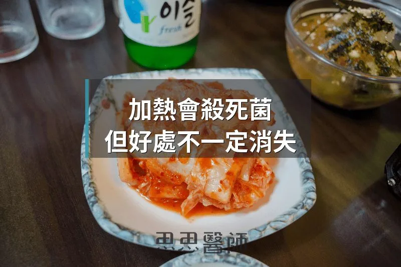

加熱會殺死菌，但好處不一定消失

有一種說法流傳很廣：發酵食物一旦加熱，裡面的菌就全死了，所以健康好處也跟著消失。意思是泡菜鍋裡的泡菜沒有用、煮熟的優格毫無意義、炒過的酸菜只剩味道。
這個說法只有一半是對的。
對的部分：菌確實會死。大多數乳酸菌和酵母菌在 60 到 70 度就開始快速死亡，超過 100 度幾乎全滅。你把泡菜煮進湯裡，裡面的 Lactobacillus 不會存活。這是事實，沒有爭議。
但錯的部分是：把「菌是否存活」當成「是否有益」的唯一判斷標準。這個邏輯跳躍，忽略了一個現在已有相當研究基礎的概念，叫做後生元（Postbiotics）。
後生元是什麼？
2021 年，國際益生菌與益生元科學協會（ISAPP）發布了一份共識聲明，正式定義了「後生元」：不具活性的微生物及其成分，對宿主具有健康益處（PMID: 33948025）。
用白話說：益生菌在發酵過程中，會產出各式各樣的代謝物、分解酵素、細胞壁片段。這些東西在菌死掉之後仍然留在食物裡，而且它們本身就對身體有作用，不需要活菌才能發揮。
這不是新的觀念，但「後生元」這個詞給了它一個正式的框架，讓科學界可以系統性地研究這一塊，而不是把「發酵食物的好處」全部歸功於活菌。
加熱之後，什麼留下來了？
發酵過程中產生的很多東西，其實對熱相當穩定。
有機酸，包括乳酸、醋酸這些短鏈有機酸，是發酵的核心產物，它們本身就是分子，不怕高溫。泡菜煮熟之後，乳酸還在，酸味還在，它對腸道 pH 值和壞菌抑制的作用也還在。
細胞壁成分，例如肽聚糖（Peptidoglycan）、磷壁酸（Lipoteichoic acid）這些細菌細胞壁的碎片，加熱後因為細菌細胞被破壞反而更容易釋放出來。這些成分會被腸道免疫系統的 Toll 樣受體（TLR）辨識，引發適度的免疫調節反應。你的免疫系統不分活菌死菌，只要看到這些分子就會啟動。
生物活性胜肽（Bioactive Peptides），發酵過程中蛋白質被分解成小片段，這些胜肽有些具有抗氧化、抗發炎或抑菌的效果，同樣耐熱。優格在烹調中被加熱，蛋白質胜肽依然留著。
死掉的菌，真的還有效嗎？
這個問題有直接的研究回答。
一篇發表在《Nutrients》的研究（PMID: 33579683）用熱處理後死亡的乳酸菌做實驗，發現這些「死菌」仍然能夠促進腸道中比菲德菌（Bifidobacterium）的生長，顯示出明確的促益生菌效果。換句話說，死菌還是能夠影響腸道菌相，只是路徑不同。
另一篇研究（PMID: 37049598）測試了熱殺菌的乾酪乳桿菌（Lacticaseibacillus paracasei），發現它能夠修復被脂多醣（LPS）破壞的腸道上皮屏障，機轉是透過調控 MLCK/MLC 途徑，影響緊密連結蛋白（Tight Junction Proteins）的表現。活菌做得到的腸道屏障保護，死菌做得到一部分，不是零。
那加熱過的發酵食物還值得吃嗎？
這不是一個非黑即白的問題。如果你的目的是讓活菌進到腸道、期待它們在那裡影響菌相，加熱確實會削減這個效果。生的泡菜、冷藏優格、未煮的酸菜，在活菌這一塊確實比加熱過的佔優勢。
但加熱過的發酵食物不是空殼。它的有機酸、細胞壁成分、生物活性胜肽都還在，這些東西對腸道環境和免疫系統的影響走的是另一條路，不依賴活菌。
實際上，大部分人吃發酵食物不是抱著「我要讓特定菌株定殖到腸道」的目的，而是把它當成飲食習慣的一部分。從這個角度來看，泡菜鍋還是有意義的，酸菜白肉鍋也還是有意義的，只是它的作用機轉和你原本想的不完全一樣。
有幾件事補充一下
不是所有發酵食物加熱的結果都一樣。味噌如果長時間高溫烹煮，不只活菌死亡，連部分熱敏感的生物活性成分也可能降解。日本傳統做法是把味噌在湯快起鍋前才溶入，不是一開始就放進去一起煮，這個習慣是有根據的。
後生元的研究目前以實驗室和動物模型為主，人體試驗仍在累積中。我們知道方向是對的，但不同種類的發酵食物、不同加熱條件下，哪些成分保留多少，沒有一個統一的數字可以直接引用。
這個概念也解釋了為什麼某些商業益生菌補充品採用「滅活菌」或「後生元」配方，不用活菌，依然能在臨床上看到效果。不是製造商偷懶，是科學告訴他們死菌也可以用。
加熱過的泡菜和優格，不等於空殼。菌死了，但發酵幾十小時留下來的產物還在，它們還是有工作做。想要最完整的效果，冷藏生吃還是比煮熟好，但煮過不等於沒用，只是換了一條路徑在作用。
 空腹小雞跟思思醫師一起斷食，順便養一隻小雞來養小雞 →
空腹小雞跟思思醫師一起斷食，順便養一隻小雞來養小雞 →
好朋友週信
一週一封：《健康駭客週報》這集的研究重點，加上家醫專欄這週的新文章。免費，隨時可以退訂。
延伸閱讀

益生菌補不回來的那種腸道多樣性
史丹佛對哈扎人的研究顯示，腸道菌相要靠食物纖維與植物種類的多樣性維持，益生菌無法取代多樣的食物。

腸道菌，直接控制你的粒線體
文中整理 Gundry《腦腸悖論》的觀點：腸道菌透過短鏈脂肪酸、血清素與內毒素影響粒線體，建議以多酚等飲食保護粒線體。

優格吃了幾十年，你可能從來沒喝過克菲爾
克菲爾與優格差異很大，克菲爾含 30 到 50 種以上微生物且有酵母菌，文獻顯示它對腸道菌多樣性與乳糖不耐可能更有幫助。